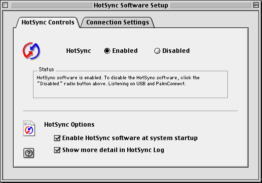
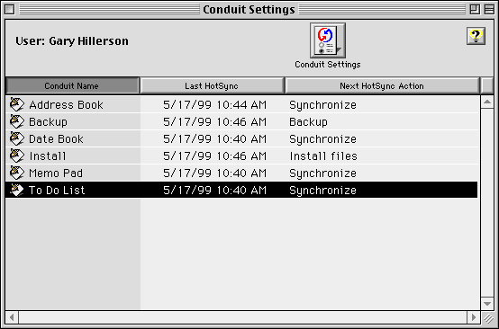
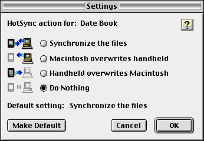

|
|
|
C/C++ Sync Suite Companion for Macintosh Palm OS® Conduit Development Kit for Macintosh, Version 4.03 |
This chapter provides information about debugging your conduit, including the following: • how to use HotSync® Manager application to provide additional debugging information • troubleshooting tips for common conduit problems • shortcuts on the handheld that you can use for debugging • how to disable time-outs and other conduits to help your debugging efforts • information about additional tools you can use for debugging on Palm Powered™ handhelds Using the HotSync Manager Application LogYou can add entries to the HotSync Manager application's log to provide you with debugging information. You can also set the additional logging information option in the HotSync Manager application to provide additional information in the log. To do so, follow these steps: 1. Select the Setup command from the HotSync menu. 2. Select the Show more detail option in the dialog box, as shown in Figure 10.1. Figure 10.1 Enabling additional log information

Location of the Log FileThe HotSync Manager application log file is named HotSync Log and is normally generated in the user's directory. Debugging Tips and TricksThis section provides several hints to help you in debugging your conduits, including the following: • troubleshooting tips for common conduit problems • how to use shortcut numbers • how to avoid power-off timeouts • how to disable other conduits Common Troubleshooting HelpThis section describes solutions to several common problems that developers have with getting their conduits working. When Your Conduit Doesn't Appear in The Custom Dialog BoxYou do not see your conduit in the Custom dialog box, it means that the HotSync Manager application has not loaded your conduit. This is usually because HotSync Manager can't find your conduit. Also, all Carbonized conduits must have a 'carb' 0 resource. When Your Conduit Doesn't RunIf your conduit displays in the HotSync Manager application's Conduit Settings dialog box, check to be sure the version number of your conduit is in the range specified by the constants MIN_CONDUIT_VERSION (0x00000101) and MAX_CONDUIT_VERSION (0x00000300). The value that you return from your GetConduitVersion entry point must be in the range MIN_CONDUIT_VERSION to MAX_CONDUIT_VERSION. Listing 7.5 shows an example of the GetConduitVersion function. You Don't Hit Your BreakpointOn Mac OS X, if your breakpoint is in OpenConduit or OpenConduitCarbon, your debugging host application must be Conduit Manager rather than HotSync Manager. For the other entry points, you must use HotSync Manager as your debugging host instead of Conduit Manager. This is due to the memory protection feature offered by Mac OS X. On Mac OS 9, it doesn't matter. Using Shortcut NumbersThe Palm OS® responds to a number of "hidden" shortcuts for debugging your programs. You generate each of these shortcuts by drawing characters on your Palm Powered handheld, or by drawing them in the emulator program, if you are using that for debugging your conduit. To enter a shortcut number, follow these steps: 1. On your handheld, or in the emulator program, draw the shortcut symbol. This is a lowercase, cursive "L" character, drawn as follows:
2. Next, tap the stylus twice, to generate a dot (a period). 3. Next, draw a number character in the number entry portion of the handheld's text entry area. Table 10.1 shows the different shortcut numbers that you can use. For example, to disable the automatic power-off feature of the handheld, enter the follow sequence:
NOTE: Many of the debugging shortcuts leave the handheld in a mode that requires a soft reset. To perform a soft reset, press the reset button on the back of the handheld with a blunt instrument, such as a paper clip. Disabling TimeoutsThere are two timeouts that you can disable when debugging your conduits. Table 10.2 provides a summary of each timeout.
Disabling Other ConduitsTo speed up your debugging efforts, you can disable all of the other conduits. To disable a conduit, follow these steps: 1. Choose the Conduit Settings menu choice in the HotSync Manager application 2. Select the conduit you want to disable. Figure 10.2 shows selecting the To Do List conduit for disabling. Figure 10.2 Selecting a conduit to disable

3. Click Conduit Settings. 4. Select the Do Nothing radio button, as shown in Figure 10.3. 5. Also click the Make Default button, as shown in Figure 10.3. This ensures that "Do Nothing" will remain effective until you unset the option. 6. Click OK. Perform this sequence of actions for each of your installed conduits. Figure 10.3 Changing the conduit action to Do Nothing

|
|
|